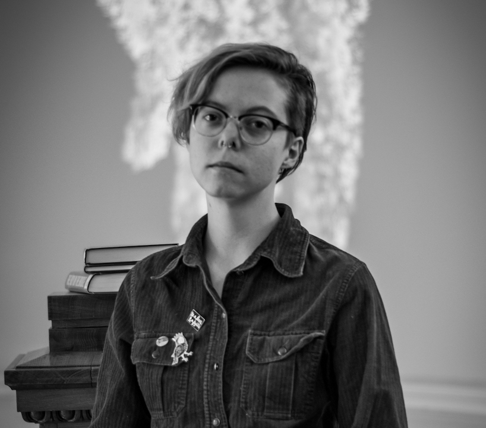

K arolina Fedyk pisze opowiadania fantastyczne i wiersze o terraformacji planet. W 2017 roku jej wiersz What Wants Us nominowano do Nagrody Rhyslinga. Jej debiutancka powieść, Skrzydła, ukaże się nakładem wydawnictwa SQN Imaginatio. Karolina głęboko wierzy w to, że wyobrażone światy mogą nauczyć nas czegoś nowego o naszym własnym. W wolnym czasie gra w larpach lub szuka towarzystwa sów i pustułek.

Fot. Alexej Belskij